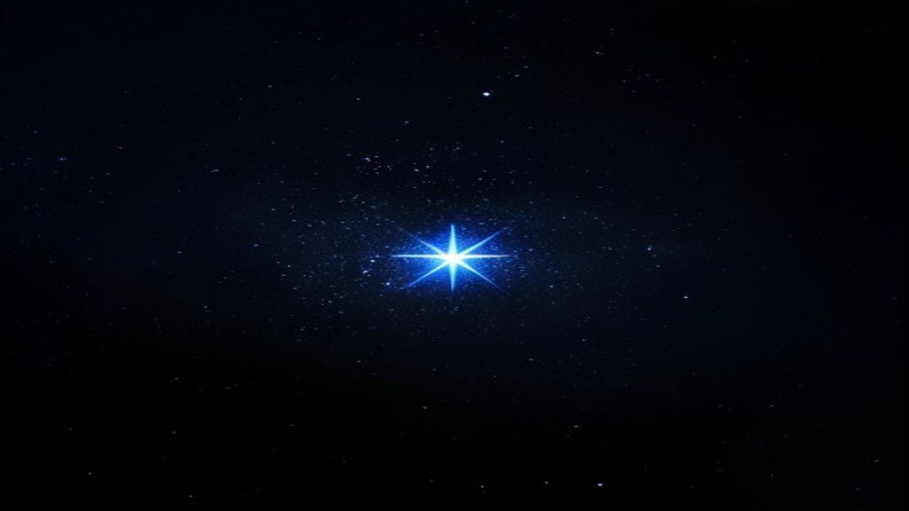
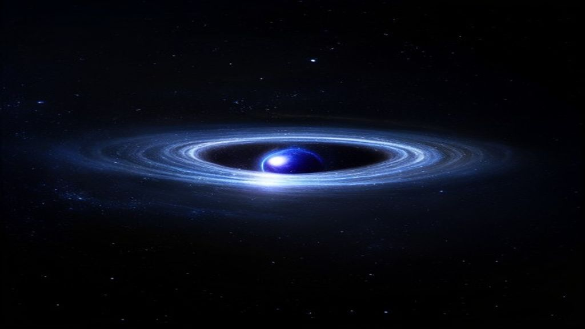
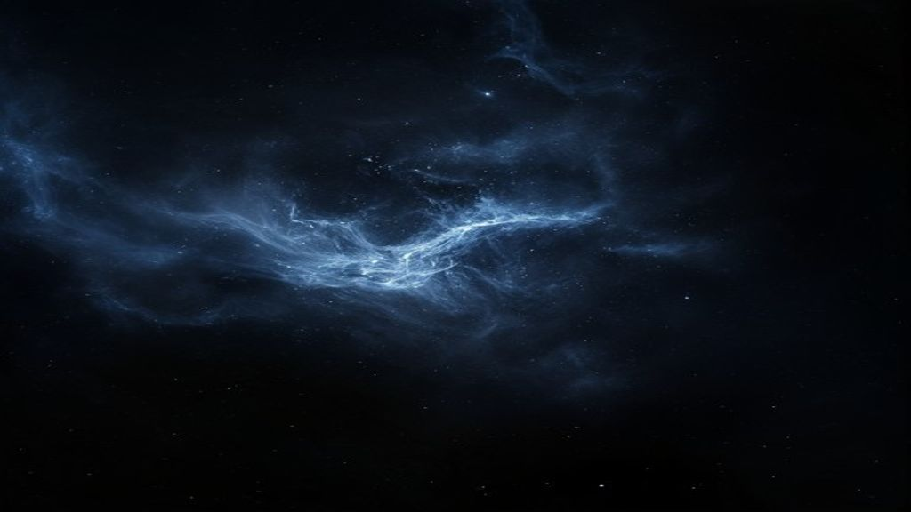
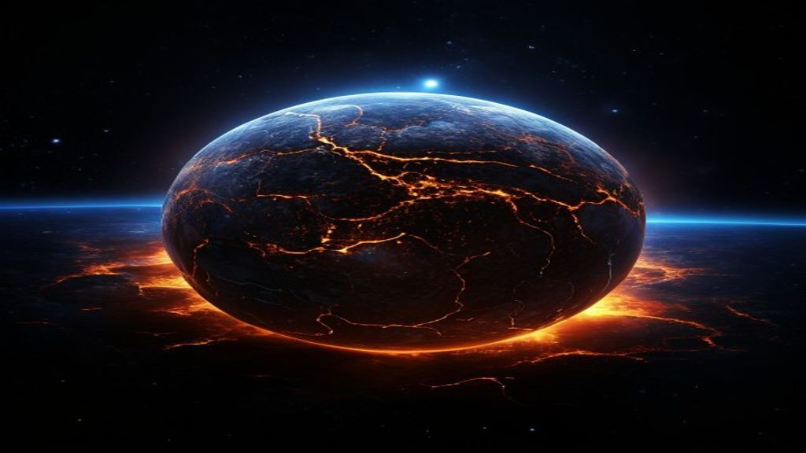
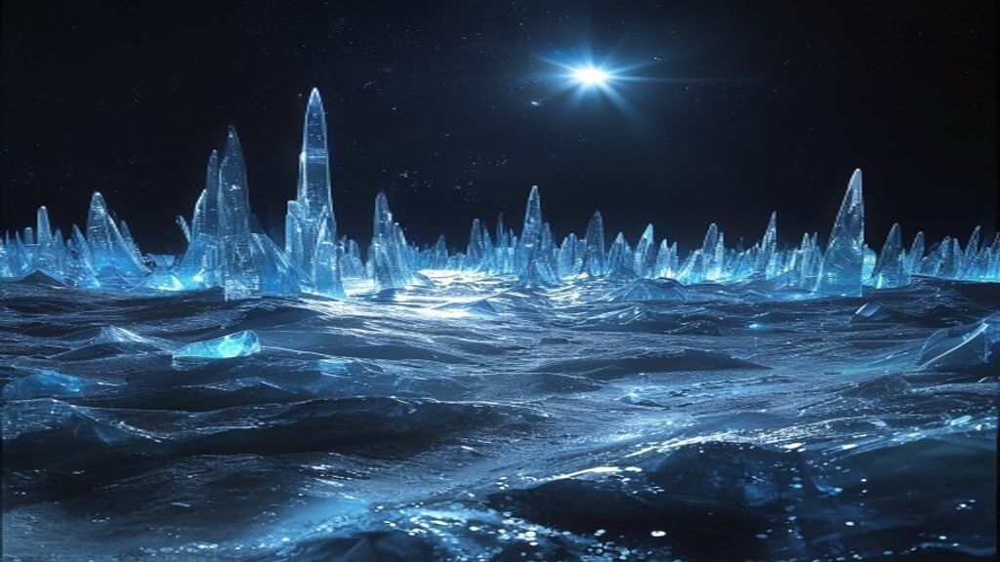
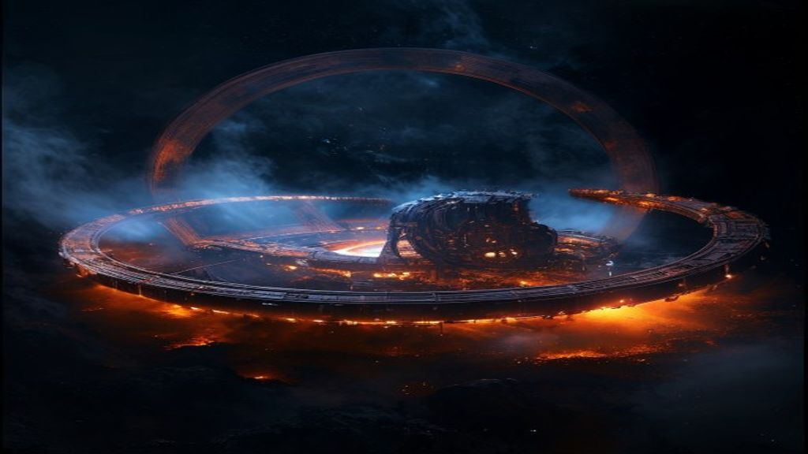
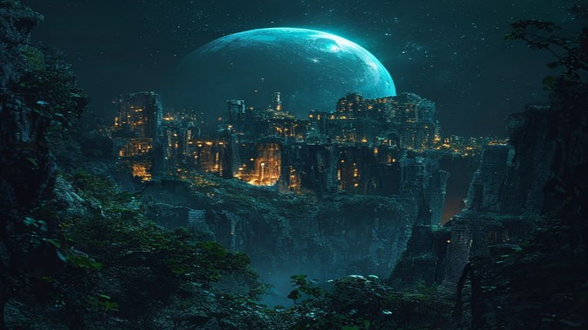
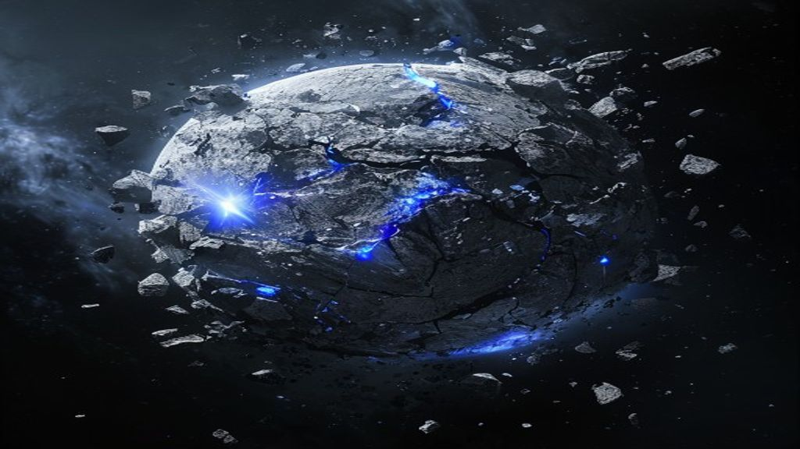
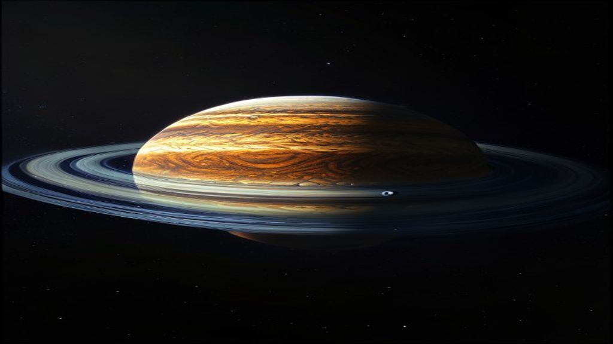
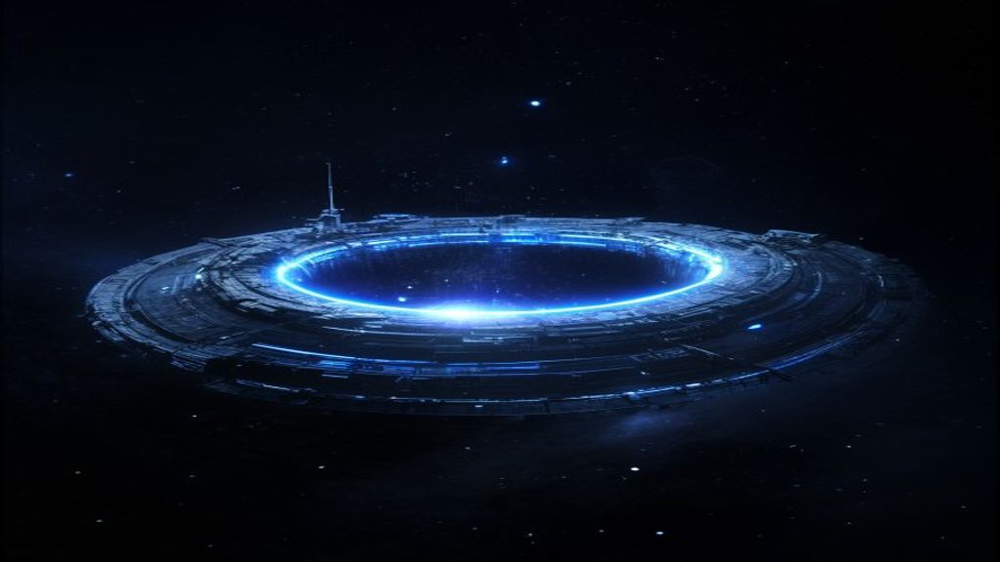

tiny blinding blue-white star alone in vast near-black space, dense but dim pinpoint starfield, sense of silence and scale, thin bright anomaly ring around the distant star

gravitational lensing around a dark neutron star, one thin blinding ring of bent light, starfield warped and smeared behind it, everything else near-black

very faint wispy blue-grey nebula filaments on pure black space, barely visible, monochrome cold blue-grey, subtle
thousands of tiny flat mirror tiles arranged in partial orbital shells around a distant blinding white point star, glitter wave of reflections, human industry among the dead

planet with black crust cracked by glowing orange lava veins, warm irradiated ember rim at its limb, orbiting close to a small blinding blue-white star
pale blue-white ocean planet, shallow seas and green land masses, slow white cloud bands, faint green aurora curling over its pole, one small grey moon

glass desert planet of translucent cyan crystal plains, faceted crystal spires catching cold starlight as bright shard edges, faint blue-white data glow like city lights on the night side

industrial forge planet of copper and rust, smog haze rim, great orbital ring of half-built habitats casting a moving shadow, sparse deep-orange foundry glow points

deep teal-green overgrown ruin planet, vine-strangled ancient cities, night side glittering with warm amber city lights left on forever

shattered planet split into fractured hemispheres, bright grey debris belt of fragments catching cold starlight, hard shadows, dead cold rock, no glow

banded amber-and-cream gas giant, vast wide ring system thrown open, ring shadow belt across the upper hemisphere, family of tiny shepherd moons

dark slow-spinning habitat ring space station with antenna farm, hull in dark instrument grey, one jump-gate ring glowing cold blue-white, far from a tiny distant star